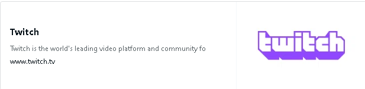

Vになってわかったこと(また今後の活動)
やぁ、ソウルメイト。どうも、やっちゃん！です🦑🏖🐮今回は僕がＶになってそろそろ10か月経つのでその経験し感じたことを言語化しようとnoteに手を出しました。思ってる事書くので余裕があれば見てね
前文からいきなり文句をいうことになってしまうけど…半角全角は揃えたい。「その経験し～」が不自然。最後の文の役割が割と謎。文体はまあうまく使い分けられたら良いよね、と思う。
↓今回はVになってそろそろ10か月を迎えようとしている僕が、これまでに経験し感じたことについて言語化して記事にしてみたいと思います。是非読んでみてね
▶ 目次
【起】そもそもなぜVになったか
流行りに乗ったのと昔から自分の新しい姿が欲しかったからですね。
今使っているX垢の前に使ってた垢があったんですけどそれは削除してしまい【居場所】がないなら自分で創り出すしかないよなという事でV化です👍
まぁ活動するに当たってはいい方に向かっていかないことを説明します^^
スミカッコは味。最後の文はまず「あたって」の用法が間違っていると思われ（漢字を開かないのは別にOKらしい）、また文章構造として今これを書く意味もわからないので、削除。ちょっと書き換えすぎたけどまあええやろ
↓僕には昔から"新しい自分"への憧れがありました。
新たな【居場所】を求めてXのアカウントを作り直した際、最近のバーチャルライバーの流行に乗じる形でV化しました👍。
【承】出逢いによる束の間の幸福と真の現実
「真の現実」が既にキモい件。MUGENかよ。単に「現実」とすればよい。「出逢い」はまあその人の感じ方だからいいよ。
僕がV化して初めてライブ配信(去年7月28日)をしたのはIRIAM(イリアム)という配信アプリでした。皆さんも広告で見たことあるんじゃないかな～？IRIAMについて掘り下げるわけではないのだから不自然な文。初配信についての話なんだろ？
ここでの失敗は端的に纏めると【Vとしての準備】が足りませんでした…簡単に言うと応援してもらえた人に渡す【※特典】やそもそもの【認知度】何もかも足りていませんでした ※今回はそのシステムの説明は省きます
「束の間の幸福」の描写が一切ないまま失敗しちゃいましたけど？そもそも文の流れがキモチワルイので、表現は細事ではあるが…
「端的に纏め」た後にさらに「簡単に言」うな。「応援してもらえた」→「応援してくださった」意味がブレない。
・最初の方はあるあるなんですけどね「端的に纏め」た後にさらに「簡単に言」うな。「応援してもらえた」→「応援してくださった」意味がブレない。
いいね毎に立ち絵の一部を見せて行く立ち絵チャレンジ
そこで100いいねとか貰えたりするとね。人は勘違いするんですよ^^
箇条書きなわけでもないこの・は何。まあいいや。"立ち絵チャレンジ"についての説明は省くべきではないと思うけど。
「あっ俺人気者なんだ、凄い！たくさんの人に認められてる！」って人はね、過剰な称えに包まれると脳が焼き切れて天狗になります👺
「束の間の幸福」ってのはこれのことね。並べ方も節々の表現も不自然で読みづれえなあ。表現についてはもう【味】ってことで済ませてしまっていいですかね？
そうして大した準備やスキルアップもせず配信をするとどうなりますか？はい、そうです。配信には人は集まりません。なんでだろうって考えた結果
これは憶測ですが配信で成功している人は歌が上手い・解説動画の作成(知識がある)・プロに負けないゲームの腕・絵が描ける(クリエイティブ)など突出した個性を活かしている事で人を惹きよせ配信が伸びるんだと思います
僕には該当する力と準備が足りておらず今でもリスナーほぼ0で苦しいです
皆さんも横の繋がりを入念に作って素材も用意して臨んでみてください( ﾉД`)
【転】前に進みつつも後悔と惰性で続く生活
超今更だけどこれ本当に起承転結になってんのかよ？
IRIAMの配信を辞退した僕は元々ゲーム配信をする予定だったのでツイッチでの収益化に向けて動いていました。実際やる気を出した一週間でアフィリエイト達成はしました(2024年9月27日に解放されました)ちなみに5月28日にはツイッチでスプラ3の配信は試みていました。ですが回数を重ねておらずトークスキルやサイトの使い方を熟知するのにだいぶ手間取る始末(2023年中期の時点で機材は揃っていました。今思うと日和らずにもっと早く配信者になって慣れることが正解だったのかなと思っています)
そんなこんなでリアルでもネットでも嬉しいことはありましたね
！！？！？！？！？！？！？！？ｗｗｗｗｗｗｗｗｗｗｗいきなり何の話ですかｗ【転】ってそういう意味？ｗ
・専門学校に合格し・アフィ解放・live2Ｄお披露目(2024年10月17日)ここで動くモデルを手に入れたのですが上記の通りあんまり活動的に成らない日もシバシバありましたね。月に2,３回すればいい方でした
上記の通りとあるが、そんなことが記されていた様子はない。
「成らない」→「ならない」、「シバシバ」→「しばしば」、すぐそばの数字の全角半角くらい揃えろや！！！！
これらを修正した上で、文としてなんか変。才能としか言いようがない。
この時の自分には危機感というものが無く「成らない」→「ならない」、「シバシバ」→「しばしば」、すぐそばの数字の全角半角くらい揃えろや！！！！
これらを修正した上で、文としてなんか変。才能としか言いようがない。
これから起こる更なるオワリに気づきませんでした
きっと出すだけ出して燃え尽きた(満足してしまった)のもあったのかもね 
【結】コンテンツの寿命と全てに置いた勘違い
勘違いをput_onした形跡はないので「置いた」は明確に誤り。何でも漢字に変換しないで、違和感持ったら調べるか無難に開いとけよ。まあここで違和感持てる人はこういう文章書かないんでしょうけど
冒頭で述べた通り、僕は自分の居場所を創り出したいと述べていましたですがその時思った気持ちとは違う感情で動いている事に気づきいたのです
「冒頭で述べた通り、～と述べていました」「思った気持ち」小学生かな？「気づきいた」は単純に誤字だし。
それは、配信で皆と遊べる・繋がれると思い自分にできることはないか！と思い今年のGW中に配信に役立つbotを導入したり
ツイッチのアラームの再設定などで環境を整えていました。
は？日本語がおかしいだろうがよ。
まとめの感想
【結】の後にまたまとめててワロタ。と思いきや、なんと「まとめの感想」でした。なんだそりゃ。失礼いたしました。